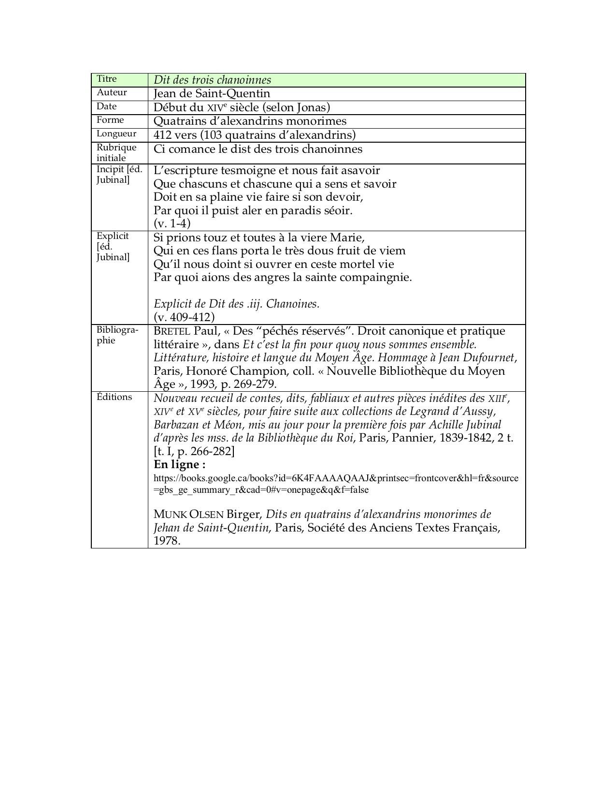

@@include('./fragments/header.html')
Jean de Saint-Quentin, Dit des trois chanoinnes
Manuscrits
Édition numérisée, accessible en ligne
Nouveau recueil de contes, dits, fabliaux et autres pièces inédites des XIIIe, XIVe et XVe siècles, pour faire suite aux collections de Legrand d’Aussy, Barbazan et Méon, mis au jour pour la première fois par Achille Jubinal d’après les mss. de la Bibliothèque du Roi, Paris, Pannier, 1839-1842, 2 t. [t. I, p. 266-282]
Éléments de description
